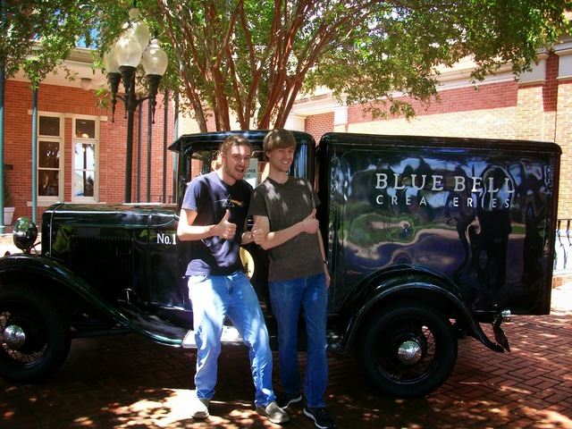
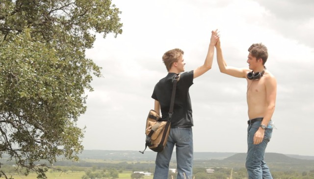

It's Tuesday and I still haven't posted my last blog. I'm just a bit behind, because I'm home! Turns out, when there's not a lot to do, you find as many non-productive things to do as you possibly can.
My last week at the farm was certainly not wasted, however. Matt and I talked about the last things I should do to touch up the network. We put a few new phones online, I showed Matt how to work the management computer, and I put a new graphical interface on the gateway.
Jake and Morgan Wallace, Matt's college-age kids, were in for the last week. Jake had guests on Thursday, and my family also stayed at the farm on Thursday night, so we had a full house Thursday night. The Bradleys were kind enough to make dinner for the entire farm. Loren made Apache fried-bread tacos and cinnamon rolls. They were absolutely delicious. Matt gave us mementos to remember the summer with (a coffee mug, mousepad, and a certificate), and he also gave Jachin and I a chance to talk about our experience at the farm. It was a great night to celebreate the time I had with the new friends I'd made.
My family decided to have a mini family vacation to the Blue Bell ice cream factory on our way home. The tour was a lot of fun, and we got free samples of ice cream. We got a sneak peak at the new flavor (which we have sworn not to reveal the identity of). The most fun part was just spending time with by brother. It's been a while since we've been together, and it'll be a while again.

We drove Andrew back to school Saturday. He's got band camp this week. I'm preparing to go back to school myself on Saturday. It certainly isn't long and I'll be back in Dallas!
Just to wrap it all up, it's been a great summer. I got a crash course in networking, and the people at G3S2 got a complete network overhaul. I also got to have some really intense spiritual conversations with the Bradleys and Jachin.
Thank you all for supporting me in prayer and with money. Without all of you, this couldn't have happened!
I thought this picture of Jachin and I at the top of the mountain fit the end of the summer quite well.
